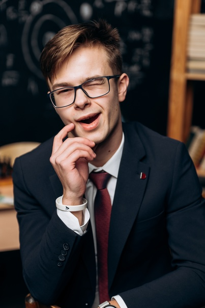
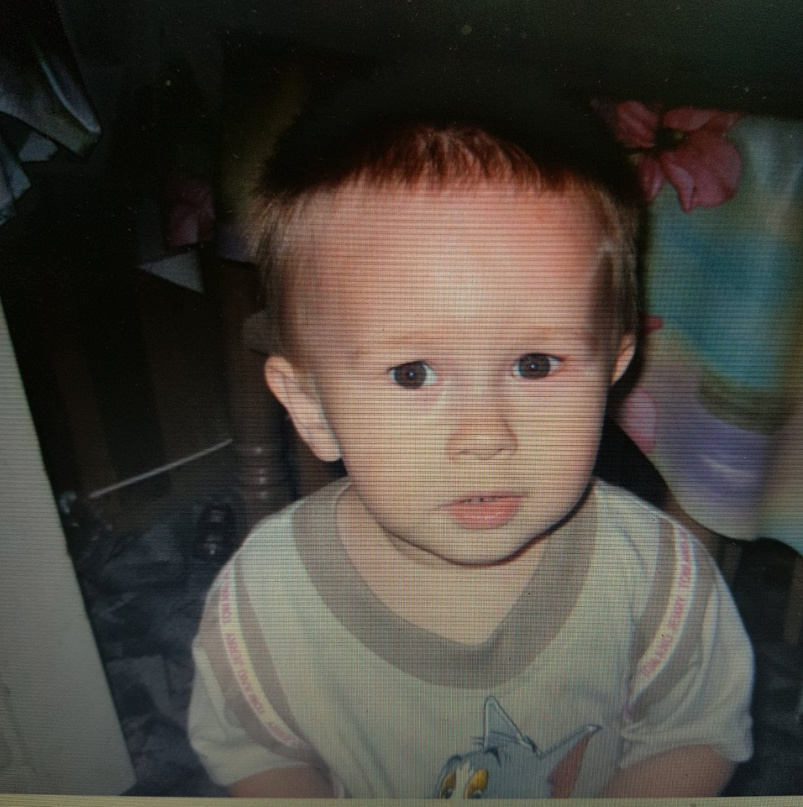
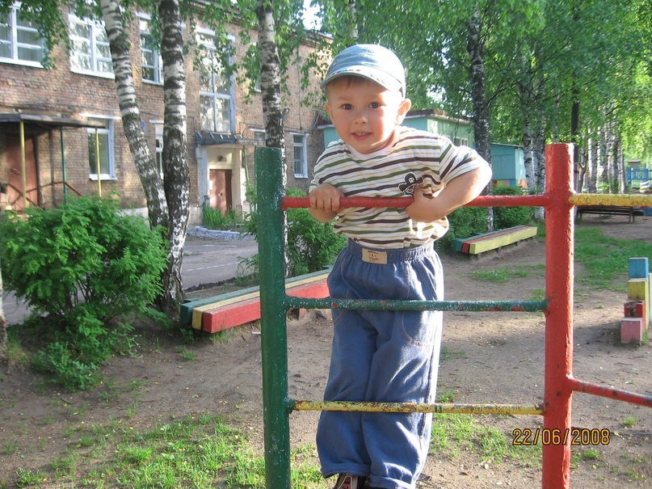
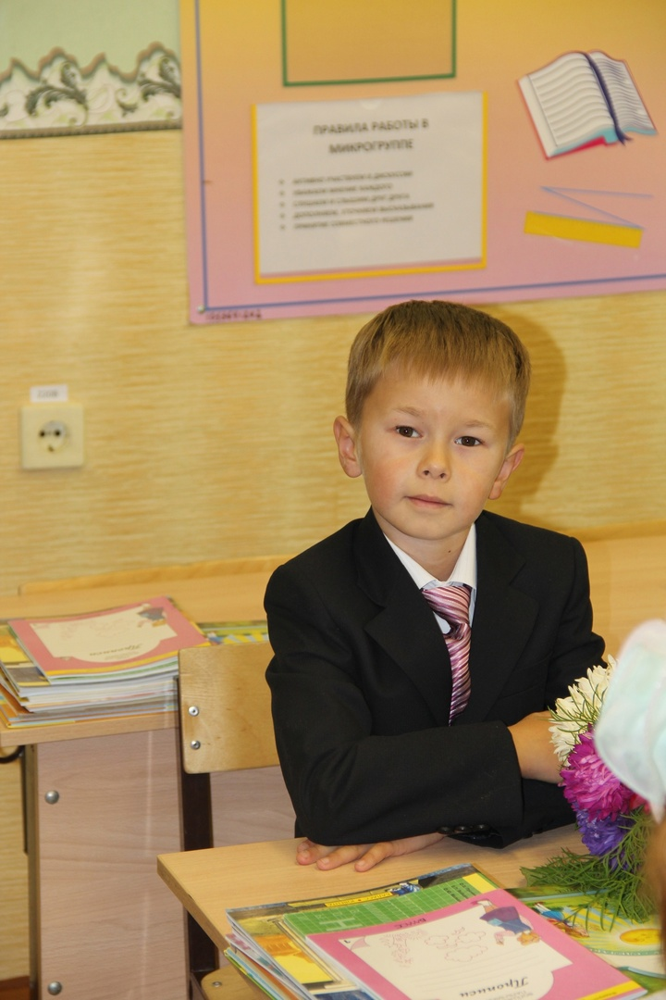
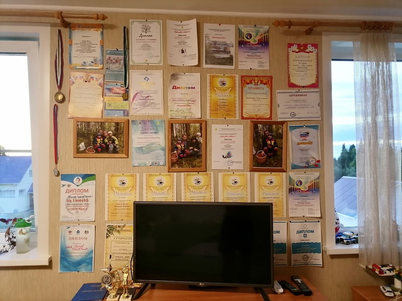
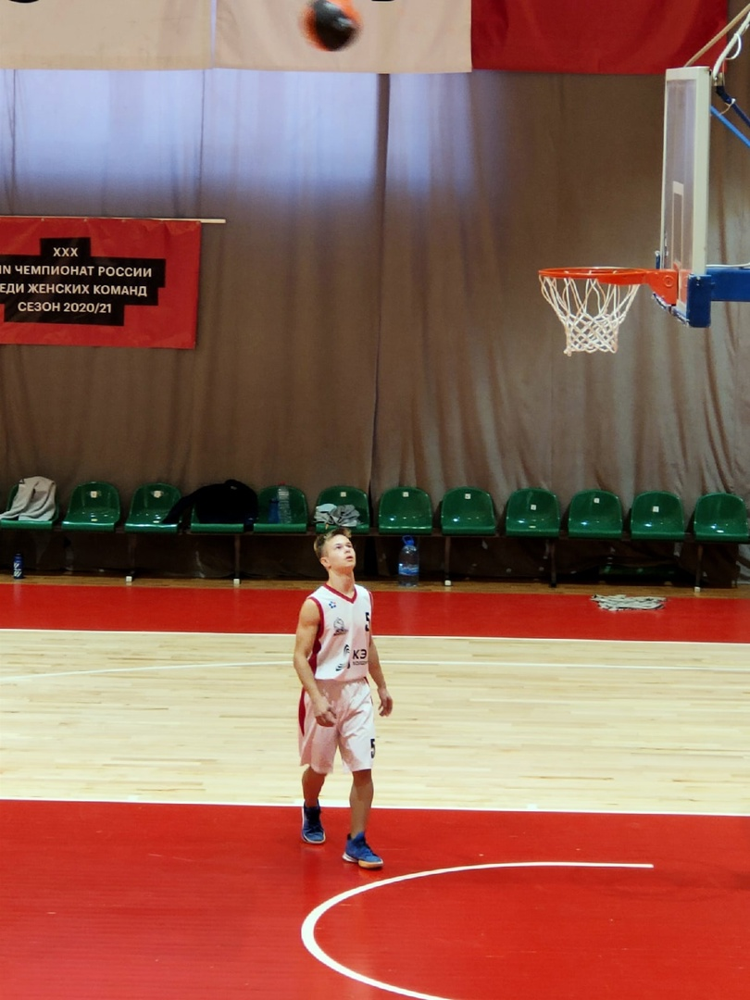
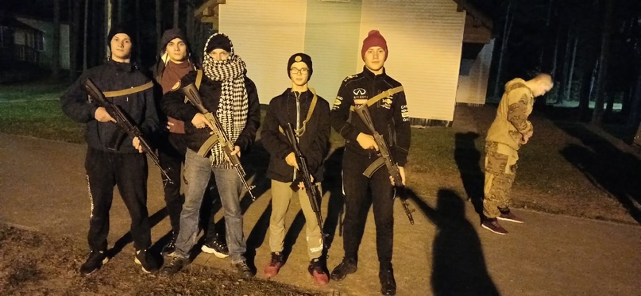
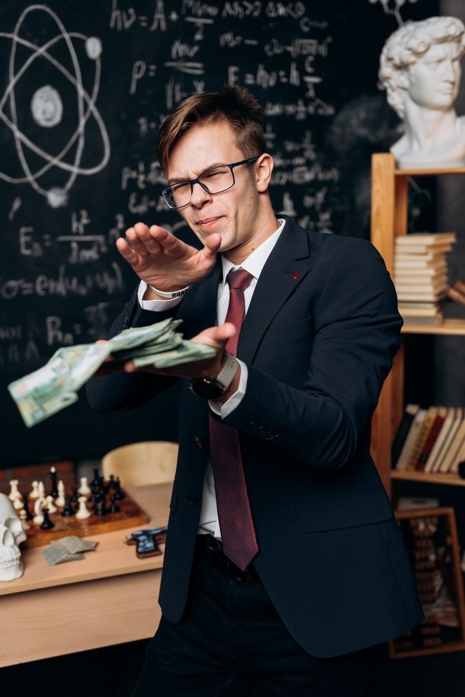

Я предприниматель… Да-да, скажете вы, он ещё школу не
закончил…А вот тут оговорочка, как раз таки закончил (недавно,
правда)
Моя жизнь - сборник ответов на большое количество вопросов,
которыми я задавался, и которыми задаётся рано или поздно любой
человек.
За свои 18 лет я многое осмыслил, понял и изучил. Решил, что
глупо таить это всё в себе! Как верно подметил Аристотель:
«Умные люди учатся на своих ошибках, гениальные - на чужих».
Так зачем же вам наступать на мои грабли, когда вы можете легко
их обойти
Я объединяю в себе множество разных ролей: от пианиста и
предпринимателя, до баскетболиста и программиста! Мои блоги -
объединение всех моих интересов, побед и инсайтов, которые
открылись мне после внедрения в свою жизнь важных принципов,
почерпнутых в книгах, подкастах, курсах и, конечно же, личном
опыте)
Моя задача - создать прямое доказательство того, что возраст -
всего лишь фикция! Заставить поверить весь мир в то, что молодые
амбициозные специалисты могут быть наравне с опытными и даже
круче…
Ну а теперь, когда я немного поведал вам о себе, предлагаю
обратиться к моим истокам или же прочитать пару статей в блоге
(далее пойдёт моя история, кому интересно - Welcome)
P.S. Теперь ты узнал меня лучше, чем 70% моего окружения!
Если хочешь понять моё мышление, увидеть мои цели и мечты -
читай до конца!
Моя жизнь:
Раннее детство
Родился я 30 июля 2005 года в небольшом городке «Сыктывкар»
(Столица республики Коми) с населением порядка 200 000 +
человек. Раннее детство провёл в деревне «Визябож», позже
ставшей родной, но вот потом…Понеслась…

Детский сад
Путешествия по разным городам, странам. Год там, год сям. Жизнь
в Финляндии, Чехии, Светогорске…И наконец снова занесло в
родные края (родители решили остаться там, где родились, ну а я,
собственно, не выбирал где жить😐). Отдали в обычный городской
детский сад (деревню посчитали не лучшим вариантом). Там я и
провёл своё детство…

Школа 1 - 7 классы

Первый раз в первый класс - в 7 лет поступил в «Гимназию
искусств при Главе Республики Коми»! Многим обязан этому
учебному заведению…Гимназия научила меня мыслить, думать,
быть порядочным человеком, подарила путь в музыку и высшее
общество. Никогда не забуду преподавателей, которые выжимали
из себя всё лишь бы научить детей уму-разуму, отдельно хочу
поблагодарить Куратову Светлану Александровну за путёвку в мир
фортепиано и больших побед! Ваш профессионализм и терпение
сделали из простого деревенского парня - крутого пианиста,
способного занимать призовые места и наслаждаться своей игрой
на рояле…
7 лет погружения в музыку привили мне трудолюбие, желание быть
на вершине и понимание, что всё в жизни достигаемо, нужно лишь
верить в себя и работать в нужном направлении!

Школа 7 - 8 классы
Последние годы в Гимназии и начало Нового пути…
7 класс стал поворотным моментом, отделившим мою судьбу на до
и после! Как сейчас помню, играю в Brawl Stars, очередной
матч…И тут пришла идея посмотреть что-нибудь на ютубе - Игорь
Войтенко, привет…Его мотивационные видео открыли во мне
человека, желающего стать не просто успешным, а великим.
Началась эра непосильных тренировок (отсюда такая форма
сейчас😍), изучения фондового рынка и погружения в основы
бизнеса! Я потихоньку стал понимать, чего хочу от жизни и кем
хочу быть!
Здесь хочу выразить отдельную благодарность Марине
Витальевной Толкачёвой за её старания! Она привила мне любовь к
спорту и показала, что 80+ кг в жиме лёжа - фигня-вопрос)
8 класс показал, насколько я влюблён в трудоголизм, и научил
самостоятельно принимать решения. Бизнес-планы и музыка
сменились желанием попробовать себя в большом спорте! Так я
нашёл его - БАСКЕТБОЛ!!! Лучшая игра с мячом, которой
увлекаюсь и по сей день.
Но быть расфокусированным - значит ничего не добиться… К
сожалению, пришлось попрощаться со стенами родной Гимназии и
на время уйти из бизнеса…

Школа 9 класс
Недоучившись год на музыкальном направлении (Эх, не получил
заветную корочку…) перешёл в 25 школу в кадетский класс, где
стал Юнармейцем! Воу, и оружие в руках уже держал…Да, не
говорите, сам в шоке, но возможности были, почему бы и не
попробовать! Целый год учился, выступал за школу в военке,
тренировался вне себя на паркете и становился сильнее физически
и морально с каждым днём!
Потихоньку начал понимать сущность баскетбола, как
такового…Понимать его структуру, отбор кандидатов на
соревнования и прочее…Если коротко, то поздно начал, да и
ростом не вышел! Но продолжал играть несмотря ни на что,
некоторые шансы бывают только раз в жизни)

Школа 10 - 11 классы
Переход в старшую школу произошёл со сменой класса! Теперь я
оказался в литературном. Если коротко, то в этот период я закончил
своё формирование и стал тем, кем являюсь сейчас🥰
Первым делом я оценил перспективы - оказалось, что мои
наработки в области бизнеса позволяли мне быть на голову выше
всех, кто им занимается (как минимум, это люди 18+, а мне тогда
было 16). Отсюда важнейшее решение оставить баскетбол своим
хобби и снова погрузиться в бизнес!
И здесь понеслась…Создание товарного бизнеса на Авито,
обучение WB-менеджером, выход на маркетплейсы, работа над
Инстаграм-каналом и наконец, создание своего блога!
Кстати, раз уж размениваюсь благодарностями, не могу ни сказать
спасибо своему классному руководителю Шабалиной Ольге
Владимировне за свой вклад в моё образование (Русский теперь
знаю получше🤗 И пару авторов тоже помню)

Итог:
Сейчас, уже закончив школу, я могу с уверенностью сказать, что не
зря экспериментировал над своей жизнью всё это время. Я понял,
что хочу осуществить и кем хочу стать, а также набрался
определённого опыта в данном направлении)
Пока что основной сферой в бизнесе является товарка, а в области
саморазвития имею много майноров: от программирования до
английского языка (об этом рассказывал в отдельном посте в
телеграме)
Что касается блогов, то посты стараюсь писать регулярно, делиться
всеми инсайтами и умными мыслями, так что ничего не пропустите